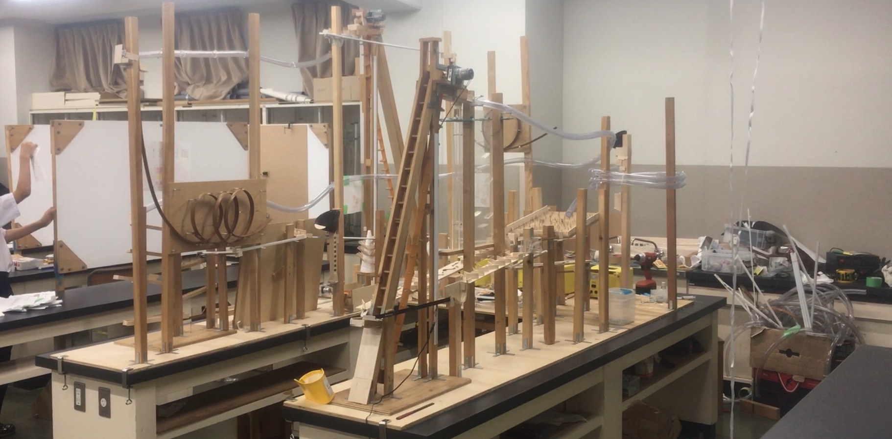
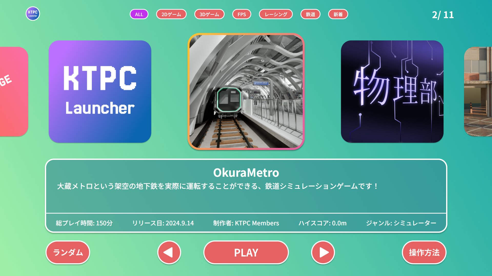

01. 物理部について
中学棟3階物理第三実験室で活動をしている、プログラミングや電子工作などの、情報・機械工学を中心に活動している部活です！
規則・ノルマなどは無く、兼部も歓迎です！
先輩後輩の仲もとても良いので、気軽に物理部まで足を運んでください！
02. 活動日について
現在、月曜日から土曜日まで、毎日活動しています。
毎日参加しなければいけない、というルールはなく、自分の所属する班の活動日の中で来れる時に参加する、という形式なので自分のスケジュールと相談して自由に参加することができます。
03. 活動班について
通常活動をしている、ピタゴラ班、電子工作班、プログラミング班、ゲーム開発班、と不定期活動をしている、実験班、無線班があります。
最低一つの班に所属し、複数の班に所属している部員もいます
ピタゴラ班
ピタゴラ装置を製作し、文化祭などで展示しています。

電子工作班
電子工作や、PICマイコンを使ったロボット製作をしています。
プログラミング班
様々な言語を使用した、WEB開発、アプリ開発などを行っています。
このWEBサイト運営もプログラミング班の活動です。
以下のような文化祭で展示を行うゲームランチャーの製作も行っています。

ゲーム開発班
ゲームの製作に取り組んでいます。
Unity・UE5・Blenderを使用した、ゲーム開発や3DCG製作などを行っています。
実験班
文化祭で演示をするための実験の考案や、練習をしています。
人気の真空砲という実験に関しては、部活紹介日でも実演をします！
無線班
アマチュア無線3級を取得した部員による、無線通信活動を行っています。
年に一度の無線大会では学校に泊まって、無線活動をすることができます！
04. イベントについて
文化祭での展示や、夏合宿、コンテストへの参加などを行っています。